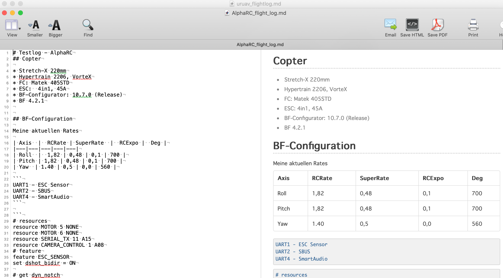

Tuning-Logbuch #
Wenn Du dich intensiver mit dem tunen Deines Copters beschäftigen möchtest empfiehlt es sich, dass du dir Setup-Einstellungen, Videos, etc. speicherst und dann später analysierst.
Besonders bei Blackbox-Logfiles ist das Problem, dass diese zwar auf einer SD-Karte (oder im Flash) gespeichert werden aber durch das Fehlen einer RTC 1 weder Datum noch Uhrzeigt im Dateinamen erfasst werde. Das mach später es häufig schwierig ein Setup einem Logfile zuzuordnen
Ähnliches kann auch bei Videos geschehen
Ich habe mir angewöhnt folgendes Logbuch pro Copter pro Flug (während der Tuning-Maßnahmen) zu führen und verwende dort auch die Markdown-Syntax 2
Hier ein Beispiel: #


Appendix #
Logbuch-Template #
# Tuning-Loguch - <copter>
## Copter
## Grundkonfiguration
# Flights
------------------------------
## <dd.mm.yyyy hh:mm> <logfile>
<Flugempfindung>
Video: <filename>
Anpassungen an der Configuration
\```
...
...
\```
------------------------------
## <dd.mm.yyyy hh:mm>
![Baustelle][imgInWork]